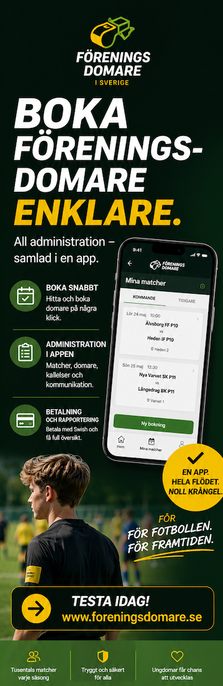

Annons


Fotbollskarta visar fotbollsklubbar i Sverige, Norge, Danmark, Finland och Island med adress, telefon och hemsida. Flaggorna vid sökrutan väljer vilka länder som visas på kartan – som standard visas bara Sverige.
Positionering (Sverige): klubbarna är geokodade från sin registrerade gatuadress via OpenStreetMap (Nominatim). Ca 82% matchar den faktiska adressen eller en identifierad anläggning/plan, ytterligare ca 1% är en anläggningsgissning på stadsnivå (t.ex. "Malmö IP") i orter med flera klubbar och kan i enstaka fall peka på fel plan, och resterande ca 17% landar på postnummer- eller ortnivå (ofullständig adress, t.ex. "Box 12"). Adressen är kansliadressen, som för många mindre klubbar sammanfaller med klubbstugan/planen men inte alltid.
Positionering (Norge och Danmark): norska klubbar är geokodade från Brønnøysundregistrenes adressuppgifter (kompletterat med NFF:s egna klubbsidor för anläggningsadress där sådan fanns). Danska klubbar kommer redan färdiggeokodade från DGI:s föreningsregister. Ett fåtal klubbar utan någon geokodningsbar adress i källorna är inte med på kartan.
Positionering (Finland): finska klubbar kommer från Palloliittos (finska fotbollförbundets) tävlingsdataplattform Torneopal, som levererar färdiga koordinater per anläggning direkt från förbundet.
Positionering (Island): isländska klubbar är hämtade från KSÍ:s (Islands fotbollsförbund) klubbregister, kompletterat med Já.is för ett fåtal större klubbar utan adress i förbundets egna uppgifter.
Loggor: visas där klubben har en registrerad bild hos SvFF. Fler loggor läggs till efter hand.
Distrikt: filtret zoomar till och visar alla klubbar inom valt distrikt (baserat på klubbens fotbollsdistrikt/krets), snarare än en ritad distriktsgräns. Gäller Sverige och Norge – danska, finska och isländska klubbar saknar distriktsindelning i källdatan.